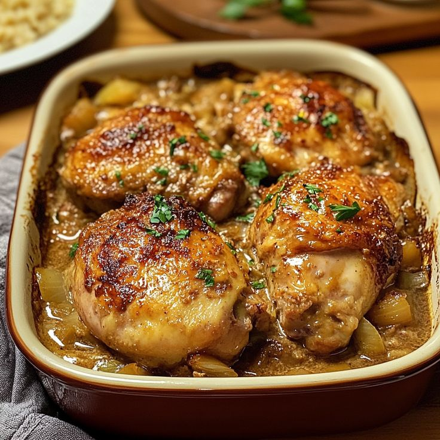
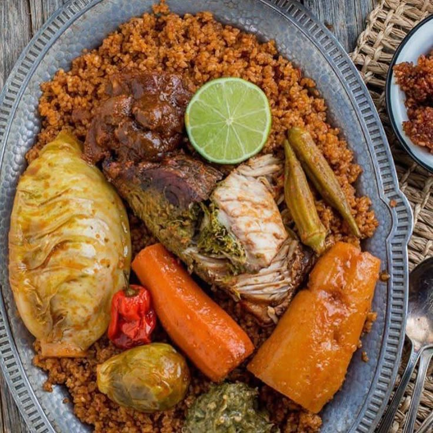
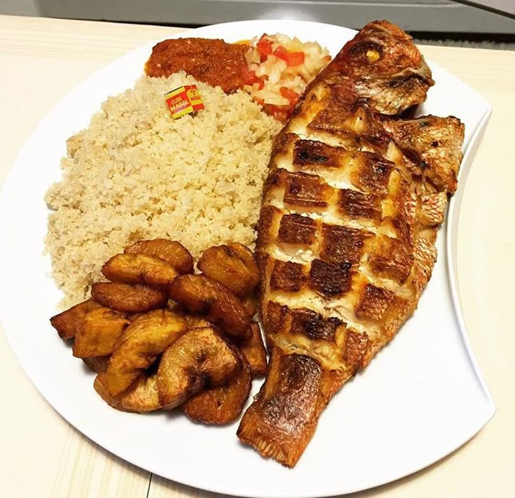
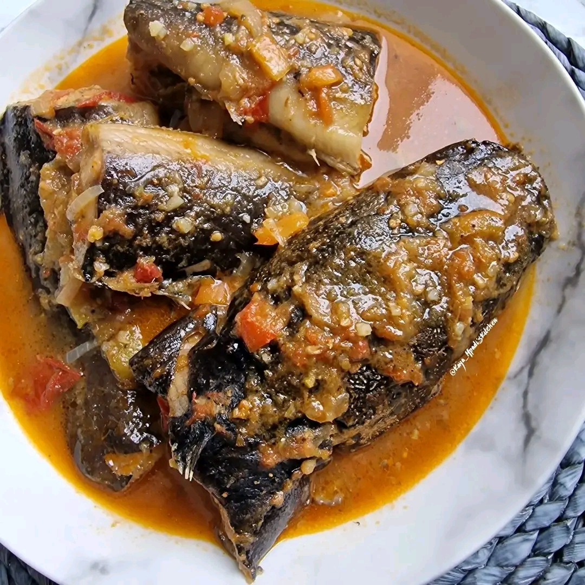

Navigation

Fumbua Kwanga (Afrique)
- Ingrédients :
- 500g de viande de boeuf
- 2 oignons
- 3 tomates
- 1 poivron
- Épices (sel, poivre, paprika)
- Instructions :
- Coupez la viande en morceaux et faites-la revenir dans une poêle.
- Ajoutez les oignons émincés et faites cuire jusqu'à ce qu'ils soient dorés.
- Incorporez les tomates et le poivron coupés en dés.
- Assaisonnez avec les épices et laissez mijoter pendant 30 minutes.

Poulet Yassa (Afrique de l'Ouest)
- Ingrédients :
- 1 poulet découpé
- 4 oignons
- 2 citrons
- 2 c. à soupe de moutarde
- 2 gousses d’ail
- Sel, poivre, huile
- Instructions :
- Faites mariner le poulet avec citron, moutarde, ail, sel et poivre.
- Faites revenir le poulet dans l’huile jusqu’à coloration.
- Ajoutez les oignons émincés et laissez cuire doucement.
- Laissez mijoter jusqu’à ce que le poulet soit tendre.

Thieboudienne (Sénégal)
- Ingrédients :
- 500g de poisson
- 300g de riz
- 2 carottes
- 1 chou
- 2 tomates
- 1 aubergine
- Épices, huile
- Instructions :
- Faites revenir les légumes et le poisson dans l’huile avec les épices.
- Ajoutez les tomates et laissez mijoter.
- Ajoutez le riz et couvrez d’eau.
- Laissez cuire jusqu’à absorption complète du liquide.

Attiéké poisson (Côte d'Ivoire)
- Ingrédients :
- 500g d’attiéké
- 2 poissons entiers
- 2 tomates
- 1 oignon
- 1 citron
- Épices, huile
- Instructions :
- Faites griller le poisson assaisonné.
- Préparez une sauce avec tomates, oignon, citron et épices.
- Servez le poisson avec l’attiéké et la sauce.

Ndolé (Cameroun)
- Ingrédients :
- 500g de feuilles de ndolé
- 300g de viande ou poisson fumé
- 100g de crevettes
- 100g d’arachides
- 2 oignons
- Épices, huile
- Instructions :
- Faites cuire les feuilles de ndolé et égouttez-les.
- Préparez une sauce avec arachides pilées, oignons et épices.
- Ajoutez la viande, le poisson et les crevettes.
- Mélangez avec les feuilles et laissez mijoter.
Fumbua Kwanga (Afrique)
- Ingrédients :
- 500g de viande de boeuf
- 2 oignons
- 3 tomates
- 1 poivron
- Épices (sel, poivre, paprika)
- Instructions :
- Coupez la viande en morceaux et faites-la revenir dans une poêle.
- Ajoutez les oignons émincés et faites cuire jusqu'à ce qu'ils soient dorés.
- Incorporez les tomates et le poivron coupés en dés.
- Assaisonnez avec les épices et laissez mijoter pendant 30 minutes.